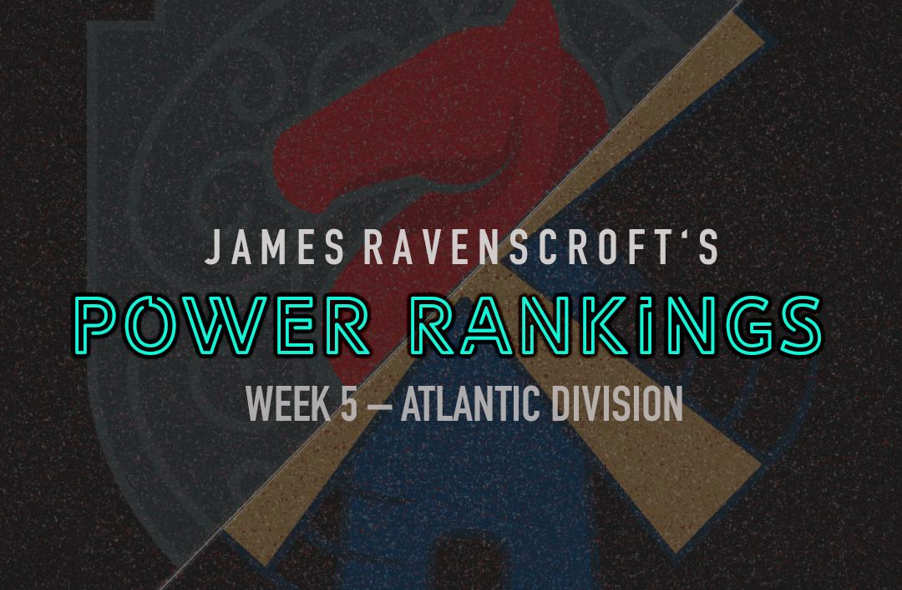

PRO Chess League Power Rankings
Week 5: Atlantic Division

This was by far the most shocking week in the PRO Chess league this year, at least in the Atlantic division. I really thought that as the season moved forward, we would see the great teams start to show themselves, but instead, we have a jumbled mess of five teams creating action every week! Recently, the Windmills have created separation at the top, a change that many fans did not see coming. The two teams that held the top two spots just a couple of weeks ago now find themselves on the verge of missing the playoffs. That action-packed thriller that we saw between the Chessbrahs and the Arch Bishops is now in the rearview mirror as they struggle to hold down a playoff spot. If this is what the rest of the PRO Chess League season is going to be like, I'm totally okay with that. Speaking of entertaining chess, check out this nice find by Grant Xu against Wesley So.
PRO Chess League Overview
This year, we will be doing a weekly power rankings list for teams in the Atlantic division. For those of you who don't know, the regular season of the PRO Chess League (PCL) is ten weeks long. Each week, teams will have to pick 4 players from their roster with an average standard rating (not blitz or rapid) of 2500 FIDE or less for each match. Every match consists of 16 games (aside from the Battle Royales) meaning every player plays 4 games, on rapid time control (15 minutes with a 2-second increment). At the end of the match, the winner of the match receives ten points for the win. Each will also earn as many points as points they earned in the match (i.e. If team A defeats team B 10.5-5.5, team A receives 20.5 points and team B receives 5.5 points). This means that every game matters, so even if a team has already lost, there is still reason to keep playing. If anything that I wrote was unclear, you can always see the
PRO Chess League Official Rules for further explanation. I'm looking forward to seeing the rest of the season, and hope you are too!

Want to support the Black and Gold? Be a part of the Pittsburgh Pawngrabbers' journey in 2019! Check out the Pittsburgh Pawngrabbers on Indiegogo to give your support!
1. Saint Louis Arch Bishops
(PR: 1) Points: 86.5
The Arch Bishops simply got outplayed. I haven't said that much this season, but it was obvious that they weren't in form. Caruana and So only combined for 4.5 points, which isn't what players, ranked top 10 in the world, are supposed to do. But even if they had combined for 6.5, the team still wouldn't have won due to a 1 point effort combined from the bottom two boards. I don't know if they were worn out from the Battle Royale, not feeling well, or simply not that good, but they need to figure out what went wrong because a team with this much talent has no excuse for this type of performance. None.
2. Montreal Chessbrahs
(PR: 3) Points: 85.5
How the mighty have fallen! This team went from first in the division to not in a playoff spot in just two weeks' time. I'm baffled by what I have seen. Maybe it's because, in the past two weeks, they haven't been using the players they usually use, but I am more skeptical. Saric played well (as always), putting up 3.5 out of four, but their bottom boards looked depressing with a combined effort of 0.5 points from boards 3 and 4. It's also possible that their journey back into the league fueled this team at the start of the season, which led to their great play. There's also the possibility that because the PRO Chess League is full of parity the Chessbrahs find themselves in a tough spot due to the great competition around them. Whatever the reason may be, this has been a bad stretch for the Chessbrahs.
3. Webster Windmills
(PR: 2) Points: 105
The Windmills have been on fire as of late! Since losing to the Arch Bishops back in week two, they have risen to a new level of excellence as a team. They didn't win because they had a great player who scored exceptionally, they won because every player on their team scored well. Not a single player scored below 2 points, even the sub-2000 rated Grabinsky. This type of formula has the potential to lead them to the playoffs and maybe even a league championship. I don't know that has gotten into this team, but right now they are playing better than the Windmills we saw last year, who—in case you didn't know—won their division last year.
4. New York Marshalls
(PR: 5) Points: 93
This was the most shocking match of the week, maybe of the entire PRO Chess League. I know I have been giving the Marshalls disrespect for weeks now, despite their undefeated record, but I agree that it's finally time to give them the respect they deserve. This team didn't just squeak out a close victory over a great Arch Bishops team; they dominated the Bishops in a way I haven't seen in more than a year. It wasn't like the Arch Bishops had a subpar lineup, they had Caruana and So—which is already a good lineup—and they still couldn't compete. Moranda had 3.5 out of 4 and what was most surprising is the 3 out of 4 effort by Grant Xu, the 2200 fourth board who could hang with Fabi and Wesley.
5. Montclair Sopranos
(PR: 4) Points: 91.5
No move in these rankings for the Sopranos, despite a win and havoc around the division, due to the strength of their victory. I know that in the PRO Chess league there are no easy wins, but I expected a better showing than the 8.5-7.5 performance against the worst team in the league. They hold the third spot in the division standings and keep getting points despite a lack of impressive wins. Their three wins this year have come against the Lions, Champions, and Pawngrabbers, and they finished fourth in the Battle Royale. Their resume doesn't jump out as great, but they still have a good number of points, which is all that really matters.
6. Pittsburgh Pawngrabbers
(PR: 7) Points: 51.5
This is the type of performance I've been waiting for all year! I love the way the Pawngrabbers played on all four boards. They really stepped up to the plate in a match that has big relegation impacts. Postny put up a perfect 4 for 4 performance, while Erenburg put up 3.5 out of 4, reminding us all why they signed these GMs. Even the lower two boards played well, putting up 2.5 and 2 points at their 3rd and 4th boards, respectively. The Pawngrabbers didn't just win, they dominated in a fashion that may scare some other teams in the division. I think the Pawngrabbers have a real chance to get back into the thick of the playoff race with a winnable match this week against Miami and the second Battle Royale right after that. If they can perform well over the next two weeks, they may just be able to save their season.
7. Miami Champions
(PR: 8) Points: 34
I have to commend Miami for their great effort against the Sopranos. They are still playing like a team who hasn't given up hope, which I love, and although they aren't getting results, they are continuing to fight each and every week. Iturrizaga scored 3 out of 4, bringing him up to 12 out of 18 on the season. Tianqi Wang also put up 2.5 out of 4 from board 4, which begs the question: Why aren't they winning? I can't say that this should be a playoff team, but they should have at least 1 win by now, and given the performance this week by boards 1 and 4, they should be able to win. Baffling as it may be, it doesn't warrant anything but the last place position in these rankings and the league.
8. London Lions
(PR: 6) Points: 37
On the other side of the coin, the Lions looked absent against the Pawngrabbers. They couldn't get going at all and suffered one of the worst losses in the league by any team this season. I almost put the Lions in last after a performance like this, but I still think that they are better than the Champions, so I kept them at 7th. Going forward, London is now staring relegation square in the face, and it can't look good. There are still five weeks left in the season, but they still haven't won a match, and their bad loss to the Pawngrabbers puts them in danger of staying in the bottom two for the rest of the season.